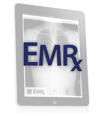

Reduce Paper, Streamline Patient Encounters
Choosing an electronic medical records solution can be a frustrating process. You'd like to take advantage of current incentives, but don't want to get stuck with a system that ignores your unique office workflow.
Well, with EMRx you can not only cash in on early adoption incentives, you can also implement a customized solution that will parallel the current workflow of your practice.
Here's why EMRx is the right system for you:
- Simple solutions for complex workflows – EMRx was designed by physicians, and is fully customizable to match your workflow. From the appointment book to chart completion, e-prescription, and billing - there's only a single screen to navigate.
- Fast patient encounters – Physicians who use EMRx spend an average of 2 minutes documenting each patient encounter. Spend less time documenting and more time caring for patients.
- Implementation & Training – The EMRx customized implementation plan allows for comprehensive training while reducing the disruption in office workflow. You get training on your time and on your terms.

- Streamlined Patient Encounters
- Easy-to-Use, Intuitive Interface
- Minimal Startup Time
- 24/7 Web-Based Access
- ePrescribing
- Built-in Labs Interface
- HL7, HIPAA, CCHIT Certified